Rollout Roadmap: Governance KPIs and Executive Reporting for Durable Outcomes for cloud governance tools
Part 5 turns the previous chapters into a rollout system: phase gates, KPI definitions, executive reporting cadence, and scale-out rules that hold under growth.
Cloud governance tools work best when execution and ownership are explicit. This chapter extends a cloud governance framework with practical cloud finops decision loops so cloud governance tools remain measurable and repeatable.
Industry Solutions Whitepaper Series
Part 5 is the closeout chapter. It consolidates Part 1-4 into a rollout blueprint that technical buyers can use in planning, procurement, and operating reviews.
A governance program is not complete when the first savings report is published. It is complete when controls remain stable under team growth, provider expansion, and release pressure. Part 5 defines that sustainability model.
1) A practical 90-day rollout plan
Most teams benefit from a three-phase plan instead of a âbig launch.â
- Days 1-30 (Baseline): establish taxonomy, owner matrix, and evidence packet format. Do not optimize every class yet.
- Days 31-60 (Execution): enforce weekly closure loop, risk-tiered approvals, and recurrence tracking.
- Days 61-90 (Prevention): introduce pipeline and schedule guardrails for high-confidence recurring classes.
Each phase should have a gate review. If a gate fails, hold scope expansion and fix operating quality first. Fast expansion on weak foundations creates misleading progress and later rollback cost.
2) KPI model: from activity metrics to outcome metrics
Governance dashboards often over-report activity: scans run, findings generated, tickets created. These indicators are useful but incomplete. Durable programs monitor four outcome-oriented KPIs:
- Closure lead time: median days from actionable finding to verified closure.
- Recurrence rate: percentage of finding classes that reappear within a fixed window.
- Realized-to-potential ratio: how much estimated impact was actually captured.
- Exception hygiene: share of exceptions closed or renewed before expiry.
For executive trust, KPI definitions must remain stable for at least one quarter. Changing formulas mid-cycle undermines comparability and creates avoidable governance debates.
3) Executive reporting design that supports decisions
Executives need clarity, not raw operational detail. A strong monthly report can fit one page plus appendix:
- Top resolved classes with realized impact.
- Top unresolved classes with owner and due date.
- Control exceptions and upcoming expiries.
- One policy adjustment proposal with expected impact.
The appendix should retain technical evidence references so engineering and audit teams can drill down without rework. This two-layer model keeps board-level communication concise while preserving operational rigor.

4) Scale-out rules for multi-team growth
As programs grow, governance tends to fragment. Different teams invent local definitions for the same finding classes, and leadership loses comparability across domains. Scale-out should follow three rules:
- Shared taxonomy core: permit local extensions, but keep a common top-level finding dictionary.
- Central metric semantics: recurrence and closure definitions cannot vary by team.
- Federated ownership: decision rights stay with domain teams; semantic governance remains centralized.
This model preserves local execution speed while maintaining enterprise-grade reporting integrity.
5) Residual risks and honest operating boundaries
No governance model eliminates all risk. Common residuals include incomplete tagging discipline, delayed owner updates during reorganizations, and temporary exception overuse during incident-heavy months. Mature teams treat these as measurable risks, not hidden assumptions.
Document residual risks in quarterly governance reviews with named mitigation owners. Transparent risk accounting builds buyer trust more effectively than âzero riskâ narratives.
6) KPI definition contract and reporting hygiene
A KPI is useful only if teams calculate it the same way. For governance programs, publish a lightweight KPI contract in plain language and keep it versioned. At minimum, define numerator, denominator, window, inclusion criteria, and exclusion criteria.
Example contract: recurrence rate counts finding classes reappearing within 28 days after verified closure, excluding classes under active approved exception. Without this precision, one team can claim improvement while another sees regression from the same raw data.
Executive trust increases when KPI formulas are stable for one quarter and any formula change is logged with rationale. This discipline prevents metric drift and protects decision continuity.
7) Executive pack template that drives action
A decision-ready executive pack should answer five questions in one view: what improved, what remains open, who owns resolution, when closure is expected, and what policy change is proposed. If any question is missing, leadership meetings devolve into status recaps.
Recommended pack structure:
- Page 1: trend summary, resolved vs unresolved classes, and risk lane distribution.
- Page 2: owner accountability table with aging buckets and due dates.
- Appendix: evidence links for high-impact decisions and exception renewals.
This structure aligns finance, security, and engineering without forcing each audience into a separate report pipeline.
8) Governance charter for long-term continuity
After rollout, teams often lose momentum when ownership changes. A one-page governance charter helps continuity. It should define decision rights, escalation windows, KPI ownership, and quarterly review responsibilities. Keep it operational, not legalistic.
Charter quality can be measured by one practical test: if the primary owner changes, can the next owner continue the program within one cycle using only the charter and evidence packs? If not, the charter is too abstract.
9) Phase closeout criteria and scale-readiness checks
Before expanding to more accounts or teams, verify three conditions: closure lead time is stable, recurrence trend is controlled, and exception hygiene is healthy. Expansion without these signals multiplies unresolved debt and weakens reporting integrity.
Scale-readiness reviews should include both operators and leadership. Operators verify execution reality; leadership confirms capacity and priority alignment. This dual review prevents optimistic scaling decisions disconnected from ground truth.
10) Governance risk register and ownership discipline
Every mature rollout should maintain a lightweight governance risk register. This is not a compliance artifact for its own sake; it is an execution steering tool. The register tracks known control weaknesses, impact assumptions, mitigation owners, and review deadlines.
High-value entries include stale exception clusters, ownership-map drift after org changes, and recurring high-noise rule classes. Review the register in the monthly governance loop and escalate unresolved high-impact entries to quarterly leadership review.
Teams that avoid explicit risk registers tend to rediscover the same issues each quarter without cumulative learning.
11) Tooling governance and release discipline alignment
Governance outcomes are sensitive to tooling consistency. If policy semantics or report structure change unpredictably between releases, trend analysis breaks and leadership trust declines. Align rollout operations with release discipline: versioned policy changes, changelog visibility, and compatibility notes for metric definitions.
A practical control is âgovernance compatibility notesâ in each release cycle, summarizing whether KPI semantics changed, whether any finding class mapping was updated, and what migration action is required. This keeps operations and product delivery synchronized.
Long-term reliability comes from this pairing: strong execution loops plus predictable release behavior.
12) Annual operating rhythm after the first 90 days
After initial rollout, teams should move from launch mode to maintenance rhythm. A practical annual cycle is: quarterly policy tuning, monthly executive reporting, and weekly closure operations. This rhythm keeps governance visible without overwhelming delivery teams.
Include one annual reset workshop where finance, security, and engineering review KPI definitions, exception policy effectiveness, and ownership matrix drift. Programs that skip this reset typically accumulate semantic drift and lose comparability across quarters.
Industry Pain Signals and Required Outcomes
SaaS and internet teams. Pain signal: governance performance varies by team and quarter. Required outcome: fixed KPI contract and quarterly reset for semantic alignment.
Fintech and payments. Pain signal: executive review asks for realized value while teams report potential value. Required outcome: one-page reporting model with strict realized/potential separation.
Healthcare. Pain signal: change in ownership causes governance continuity gaps. Required outcome: chartered operating rhythm and evidence quality ownership.
Manufacturing and retail. Pain signal: scale expansion outpaces governance maturity. Required outcome: phase gates and scale-readiness checks before adding new regions or accounts.
Implementation Checklist for Part 5
- Adopt a three-phase 90-day rollout with explicit gate criteria.
- Publish outcome KPIs and freeze definitions for one full quarter.
- Use one-page executive reports with technical appendices.
- Scale with shared taxonomy and centralized metric semantics.
- Track residual risk explicitly with named owners and review dates.
Series and Product Links
- Part 1, Part 2, Part 3, Part 4, Part 6, and Part 7: full series narrative chain.
- Whitepapers: consolidated access to security, technical, and industry tracks.
- Pricing and Enterprise: deployment paths by team size and governance depth.
- Documentation: implementation details for operators and reviewers.
Risks
- KPI drift if formulas change without version and compatibility notes.
- Scale-out failure if routing remains account-level while reporting is enterprise-level.
- Exception accumulation when expiry controls are defined but not enforced.
- Leadership trust erosion when potential savings and realized savings are mixed.
Next Decision
Continue with Part 6 to map rollout controls into SOC2/ISO27001/GDPR-ready evidence language for security and procurement review.
Series Closeout
This industry solutions whitepaper is intentionally cumulative: invisible debt mechanics (Part 1), regulated control evidence (Part 2), engineering guardrails (Part 3), operating-model playbooks (Part 4), sustained rollout governance (Part 5), compliance mapping (Part 6), and procurement decisions (Part 7). Read in sequence, it is designed to function as one coherent operating document rather than disconnected blog posts.
Run this industry playbook in your own environment
Use the same governance pattern your team just reviewed and validate it with real account evidence.